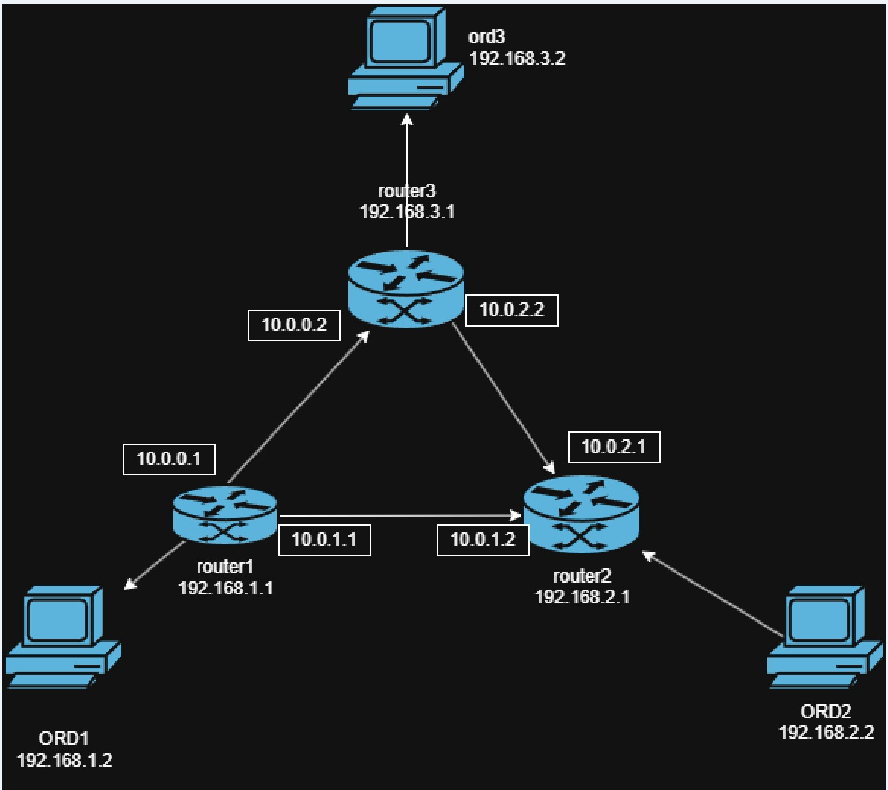

Enrutamiento entre dos LANs con routers Linux en contenedores
Realizado por JulianCO · SEGURIDAD ASIR
🎯 Introducción y objetivo
En esta práctica vamos a montar una red completa con 4 contenedores Docker: dos PCs (clientes) y dos routers Linux. El objetivo es que los dos PCs se comuniquen entre sí a través de los dos routers, simulando una topología clásica de dos LANs unidas por un backbone.
Topología

Contenedores y direcciones
Contenedor
red-201
red-202
red-200
Ruta por defecto
ord-201
192.168.201.2
—
—
via 192.168.201.1
ord-202
—
192.168.202.2
—
via 192.168.202.1
router1
192.168.201.1
—
192.168.200.1
via 192.168.200.2
router2
—
192.168.202.1
192.168.200.2
via 192.168.200.1
¿Por qué usamos Docker? Docker crea bridges Linux reales, no simulaciones. Los contenedores usan la pila TCP/IP del kernel, así que el enrutamiento es real. Es mucho más ligero y rápido que montar 4 máquinas virtuales.
⚙️ Preparación del sistema
Toda esta preparación se hace en un Ubuntu Server recién instalado. Se hace una sola vez.
NETWORK ID NAME DRIVER SCOPE
xxxxx bridge bridge local
xxxxx host host local
xxxxx none null local
xxxxx red-200 bridge local
xxxxx red-201 bridge local
xxxxx red-202 bridge local
Detalle importante:
• El gateway que pone Docker es .254, pero nadie lo usará (el router tiene .1). En el Paso 4 lo sobreescribiremos.
• El --ip-range=.../32 hace que Docker no asigne IPs automáticamente (solo reserva la .200). Así podemos poner IPs fijas sin conflictos.
docker exec ord-201 ip route replace default via 192.168.201.1
docker exec ord-202 ip route replace default via 192.168.202.1
docker exec router1 ip route replace default via 192.168.200.2
docker exec router2 ip route replace default via 192.168.200.1
Qué esperar: silencio. Sin errores = éxito.
4.3 — Verificar las rutas
docker exec ord-201 ip route
Qué esperar en ord-201:
default via 192.168.201.1 dev eth0
192.168.201.0/24 dev eth0 proto kernel scope link src 192.168.201.2
4.4 — Ping final: ord-201 → ord-202
docker exec ord-201 ping -c 4 192.168.202.2
Qué esperar:
PING 192.168.202.2 (192.168.202.2) 56(84) bytes of data.
64 bytes from 192.168.202.2: icmp_seq=1 ttl=62 time=0.123 ms
64 bytes from 192.168.202.2: icmp_seq=2 ttl=62 time=0.098 ms
64 bytes from 192.168.202.2: icmp_seq=3 ttl=62 time=0.105 ms
64 bytes from 192.168.202.2: icmp_seq=4 ttl=62 time=0.101 ms
--- 192.168.202.2 ping statistics ---
4 packets transmitted, 4 received, 0% packet loss
Detalle clave: el ttl=62
Linux arranca el TTL en 64. Cada router que reenvía el paquete lo decrementa en 1. Si el TTL fuera 64, significaría que no ha atravesado routers (algo falla).
• TTL = 64 → 0 routers (misma red).
• TTL = 63 → 1 router.
• TTL = 62 → 2 routers (ida y vuelta pueden verse como 62 o 63 según cómo se cuente).
4.5 — Traceroute: ver el camino
Si traceroute no está instalado, lo instalamos con:
Sintaxis correcta: usar sh -c "..." para que el && se ejecute dentro del contenedor.
docker exec ord-201 traceroute 192.168.202.2
Qué esperar:
traceroute to 192.168.202.2 (192.168.202.2), 30 hops max, 60 byte packets
1 router1.red-201 (192.168.201.1) 0.099 ms 0.015 ms 0.007 ms
2 192.168.200.2 (192.168.200.2) 0.032 ms 0.011 ms 0.011 ms
3 192.168.202.2 (192.168.202.2) 0.060 ms 0.014 ms 0.015 ms
Camino: ord-201 → router1 → router2 → ord-202. ✅
📊 Resumen final
Direccionamiento
Contenedor
red-201
red-202
red-200
Default via
ord-201
192.168.201.2
—
—
192.168.201.1
ord-202
—
192.168.202.2
—
192.168.202.1
router1
192.168.201.1
—
192.168.200.1
192.168.200.2
router2
—
192.168.202.1
192.168.200.2
192.168.200.1
Conceptos dominados
Redes bridge en Docker → interfaces virtuales en el host.
IP fija sin DHCP → con --ip-range=/32.
Router Linux → contenedor con 2 interfaces.
IP forwarding → net.ipv4.ip_forward=1, imprescindible.
Ruta por defecto → ip route replace default via ....
TTL → cada router resta 1. Sirve para saber cuántos ha atravesado.
Traceroute → muestra el camino salto a salto.
🏁 Fin de la práctica
Has montado una red completa con 2 LANs, 2 routers y enrutamiento real entre extremos. Todos los conceptos que has aplicado (direccionamiento IP, tablas de rutas, forwarding, TTL) son exactamente los mismos que se usan en redes físicas reales.